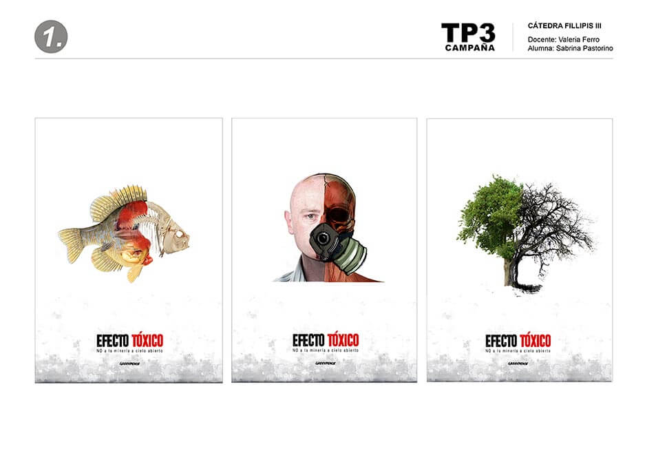
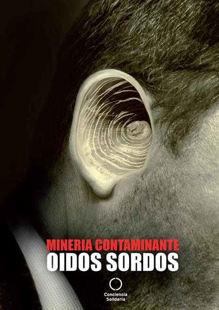
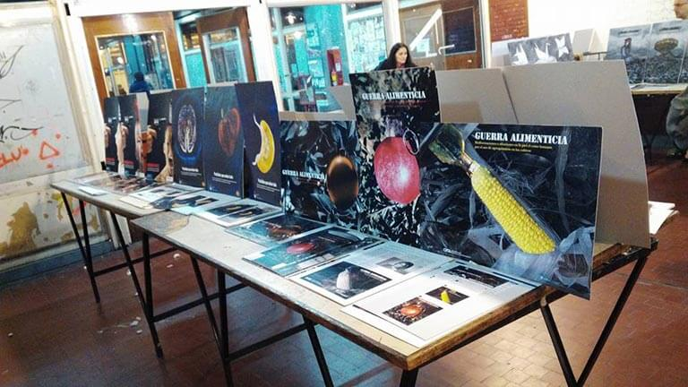
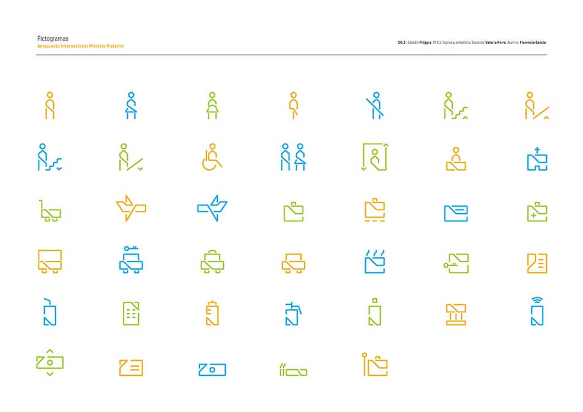
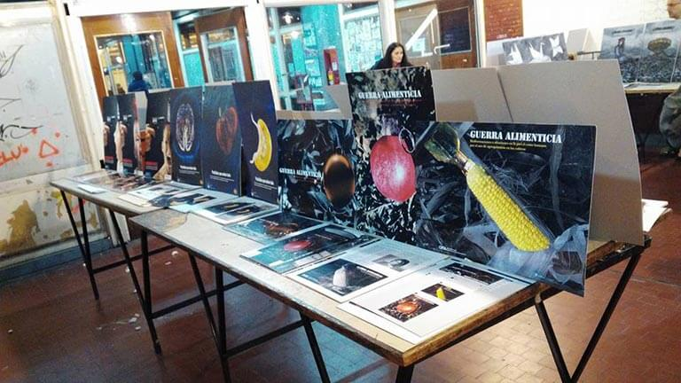
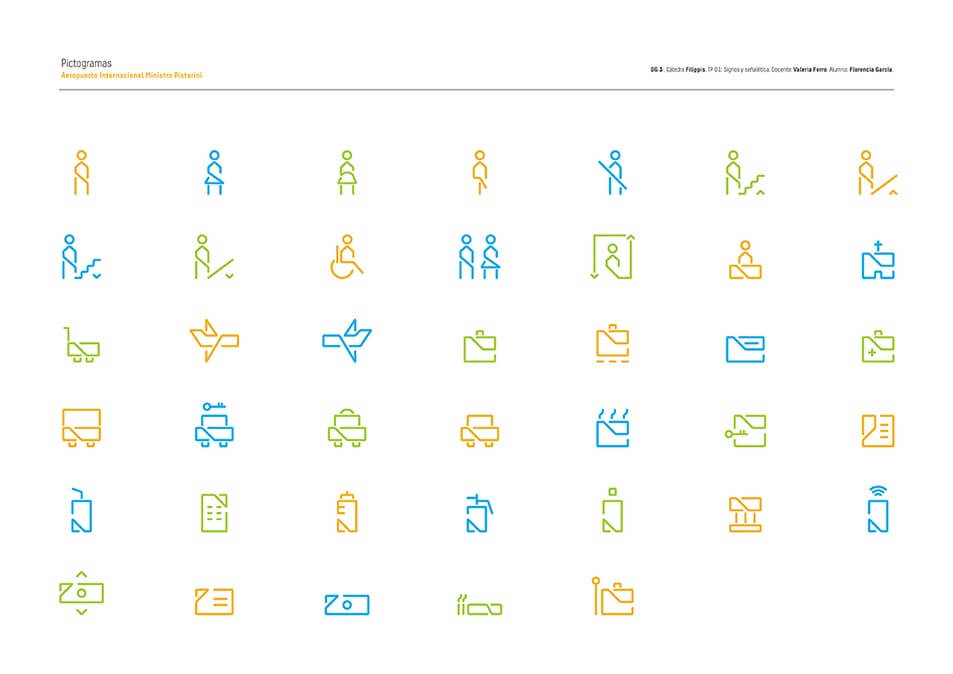
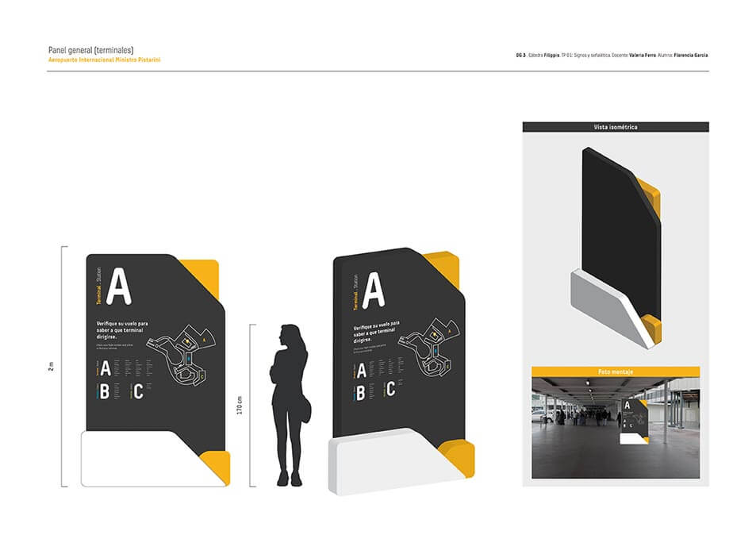
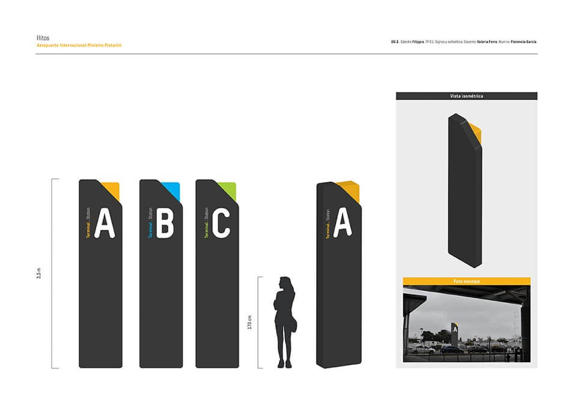
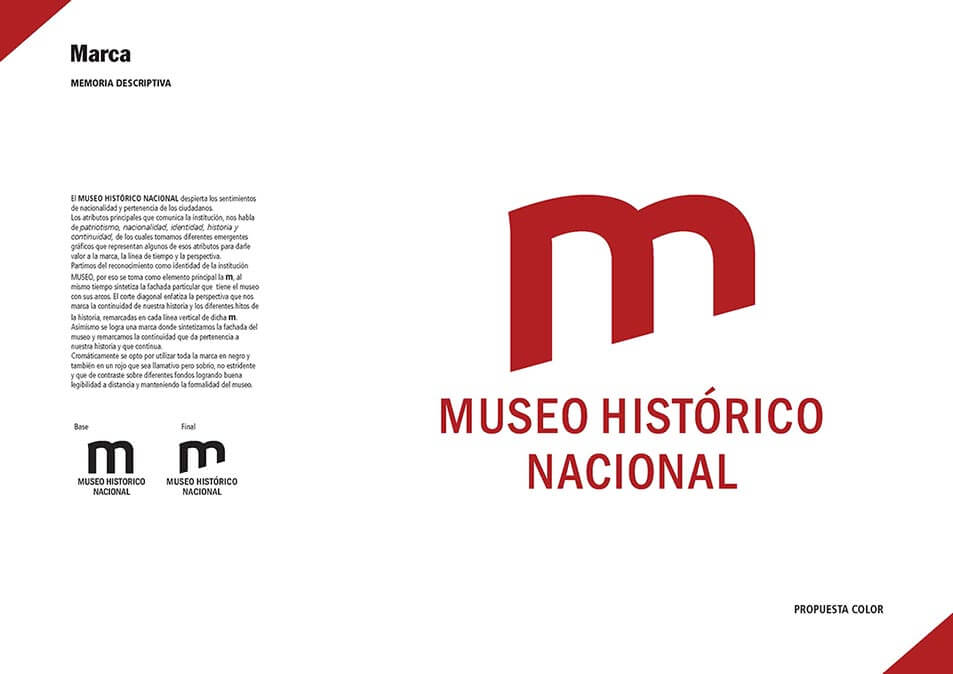

TP Campaña
Campaña de concientización social, interviniendo sobre el tema “Industrias Contaminantes”, de forma que permita nuevas miradas y promueva cambios de conducta.
Alumno / Florencia García

TP Campaña
Campaña de concientización social, interviniendo sobre el tema “Industrias Contaminantes”, de forma que permita nuevas miradas y promueva cambios de conducta.
Alumno / Sabrina Pastorino
TP Campaña
Campaña de concientización social, interviniendo sobre el tema “Industrias Contaminantes”, de forma que permita nuevas miradas y promueva cambios de conducta.
Alumno / Eric Vargas

 



TP Signos y Señalética
Programa integral de signos y señalización para el el Aeropuerto Internacional Ministro Pistarini, conocido comúnmente como Aeropuerto Internacional de Ezeiza
Alumno / Florencia García


TP Editorial
Elaboración del rediseño editorial integral de un diario provincial
Alumno / Alex Schuster

TP Imagen Corporativa
Diseño de Marca, Imagen Corporativa y Proyecto Señalético para el Museo Histórico Nacional, propuesto como comitente real por la cátedra, para que los alumnos participen de un concurso cerrado de diseño.
Alumnos / Ariel Palacios, Eric Vargas, Mercedes Garcia, Sebastián Casella